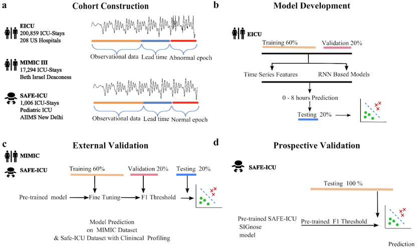
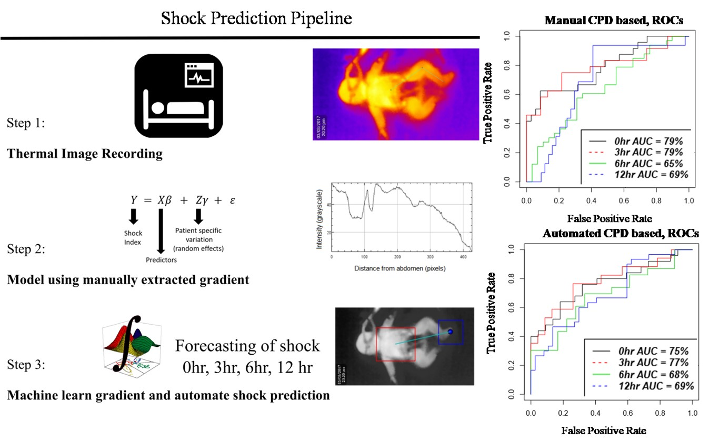
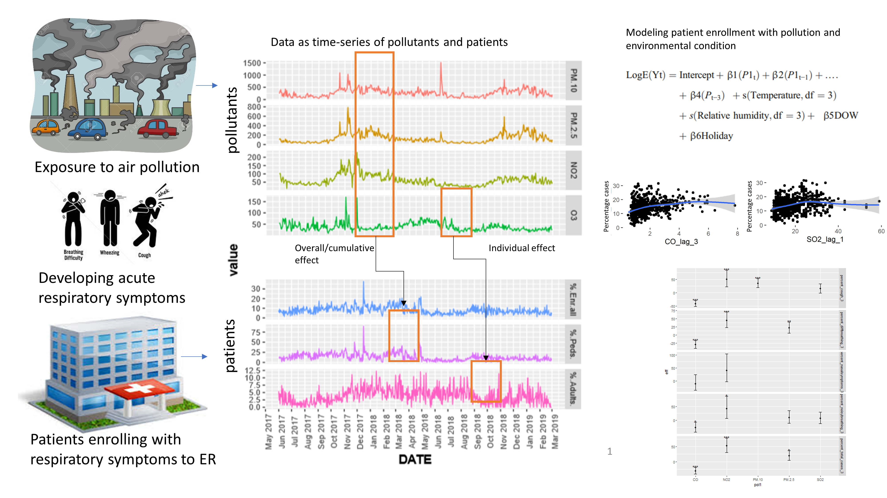
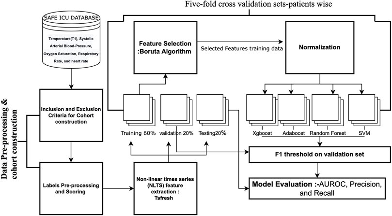
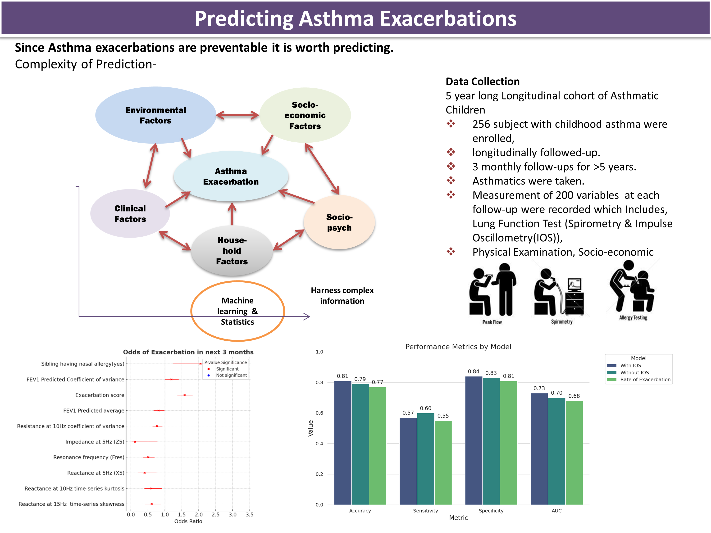
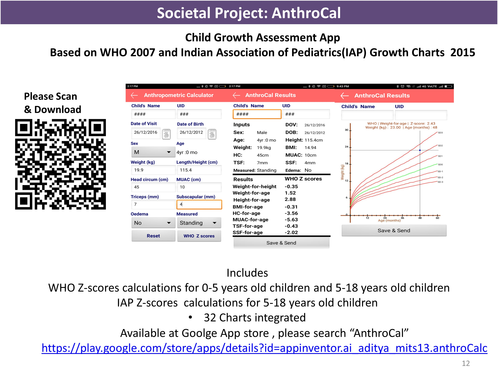
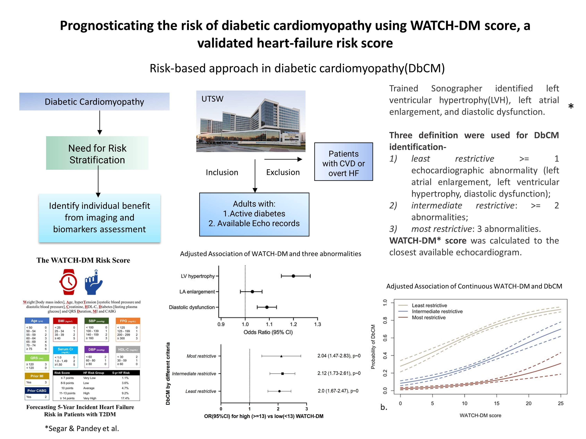
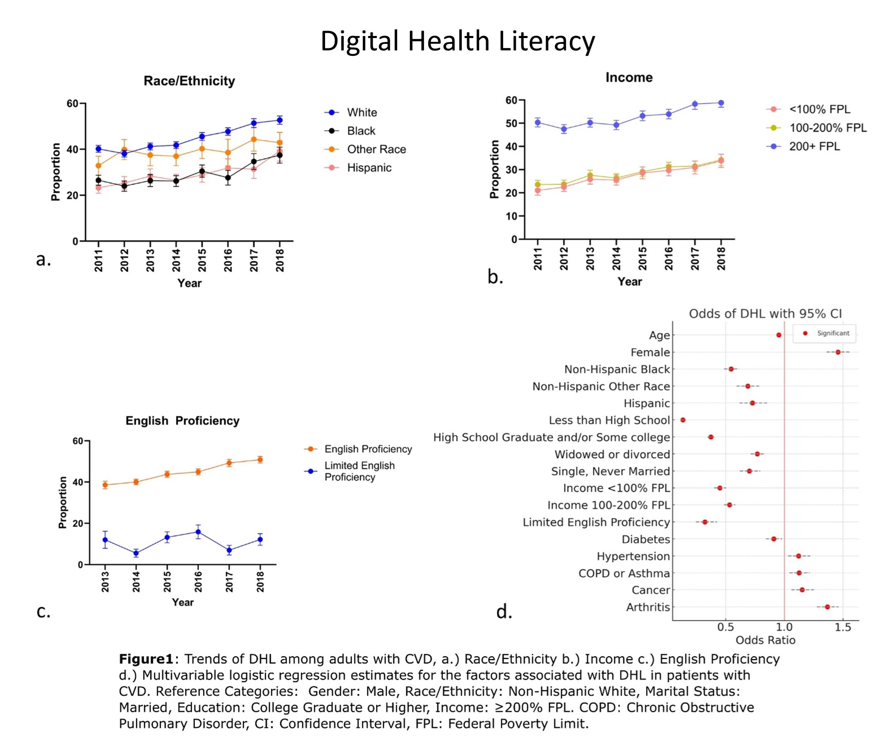

Prospectively validated hemodynamic shock prediction using physiological vitals

Thermal imaging and computer vision to predict hemodynamic shock

Effects of ambient air pollution on emergency room visits of children
for acute respiratory symptoms in Delhi, India

Hypothermia prediction using physiological vitals time-series data

Predicting Childhood Asthma Exacerbations

AnthroCal: child growth assessment app

Prognosticating the risk of diabetic cardiomyopathy using WATCH-DM score

Digital health literacy and social determinants of health
